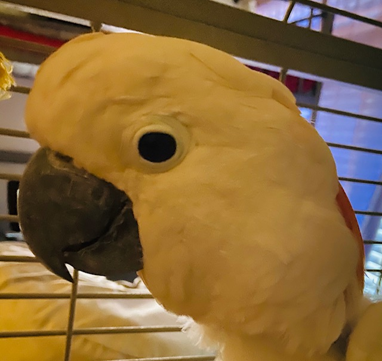

The Moluccan Cockatoo

Aka Salmon-Crested Cockatoo
Moluccan Cockatoos are one of the largest species of parrots.
They crave attention and love and just want to be near their owners.
They are white with salmon pink colored feathers, their feet and beak are black.
They have down feathers that produce powder.
They are native to south Moluccas and Indonesia.